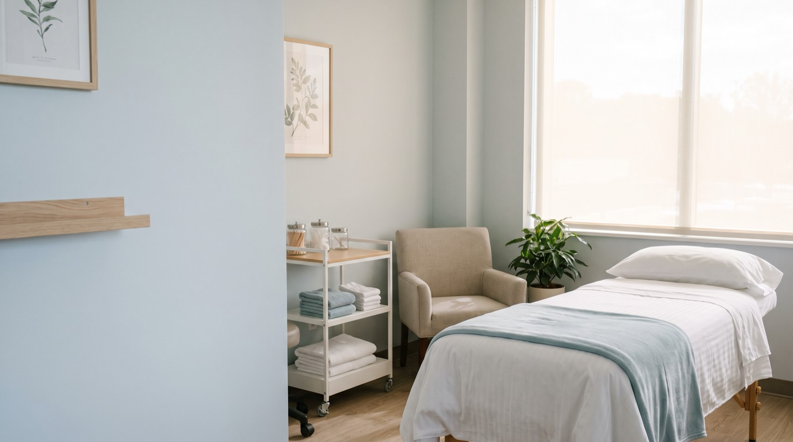

Skin cancer & Mohs surgery
Screening, biopsy and Mohs micrographic surgery on site, so diagnosis and removal don't mean two separate waits.
Medical · Surgical · Cosmetic
Medical dermatology, skin cancer surgery and a separate cosmetic clinic: different calendars, different money, different front doors. Choosing correctly saves you weeks and an argument with your insurer.

Services
Medical dermatology runs on insurance and referral. The cosmetic clinic runs separately, with its own booking and published pricing.
Screening, biopsy and Mohs micrographic surgery on site, so diagnosis and removal don't mean two separate waits.
Acne, eczema, psoriasis, rosacea and hair loss. Most insurance accepted, and biologics managed in house.
Eczema, birthmarks and adolescent acne, in appointments long enough for a child to settle.
Injectables, lasers and medical-grade skincare, with published pricing. Booked separately from medical visits.
Results
"Nine days from calling to being seen. I'd been quoted three months elsewhere."
Priscilla N. · Skin check"Mohs done on site. No second referral, no second wait."
Hank D. · Mohs surgery"Cosmetic side has prices online. Refreshing."
Yuki S. · Cosmetic clinic"Twelve years of eczema finally under control."
Ade F. · Medical dermatologyProcess
Medical and cosmetic run on different calendars and different money. Getting this right saves you weeks.
Worried about a spot, a rash or a mole? Medical. Wanting to change how your skin looks? Cosmetic. If unsure, book medical.
Online, with insurance details taken up front, so the first visit isn't twenty minutes of paperwork.
Full-body skin checks run about thirty minutes. Anything suspicious is biopsied the same visit wherever possible.
Pathology back within a week, delivered by a person on the phone, with the next step already scheduled.
Don't sit on it. Skin checks are booking about two weeks out and we hold urgent slots every week for exactly this reason.
Most major insurance accepted on the medical side. The cosmetic clinic publishes its prices and books separately. If unsure, book medical.